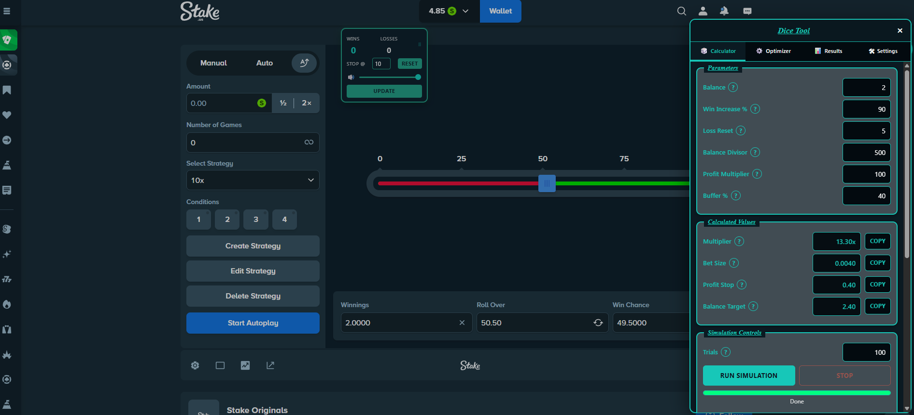
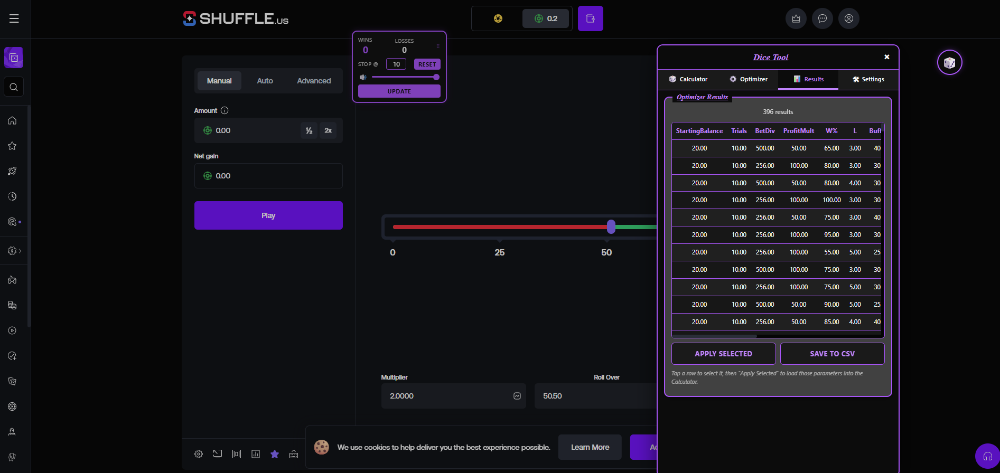

Dice Tool
Build your own SWALD-style 8.47 dice strategies — with a full calculator, simulator, and a range-based optimizer. Stake + Shuffle, .com + .us.
Inspired by SWALD's (of StakeStats) 8.47 strategy. This script gives you the ability to easily create your own 8.47 style of strategy on Stake's or Shuffle's Dice original. Works for both .us sites and .com sites.
Equipped with 2 separate simulators. The main simulator is for testing your own inputted values. The optimizer simulator allows you to enter value ranges for each parameter — a simulation with each value combination within your set ranges will be run a number of times depending on how many "Trials per combo" you have set.
The results of these trial runs will be on the Results tab. From there you can examine the stats of each combination. You can sort the results by any category, or you can see which combination was best overall by sorting by Score (the default sorting method). When you find a combination you like, you can apply that selected strategy to the Calculator (first tab) for further testing of that individual strategy using your own balance with Simulation Controls.
If you want to use that strategy for real, you can import it into the game by selecting Import New Strategy at the bottom of the Calculator page. This will create the strategy in your game. Be sure to always click Update on the little tool before a run, and after each profit stop. Or if you have chosen to disable the little tool, you will need to use the Export Balance & Update Strategy button at the bottom of the Calculator tab.
Screenshots



Install
Stake / Shuffle — Desktop
Full Dice Tool (calculator, simulator, optimizer, strategy import). Install both: script + app.
Download for DesktopStake / Shuffle — Mobile
Full Dice Tools app (calculator, simulator, optimizer, one-tap strategy import) in a phone-friendly floating panel.
Install for Mobile